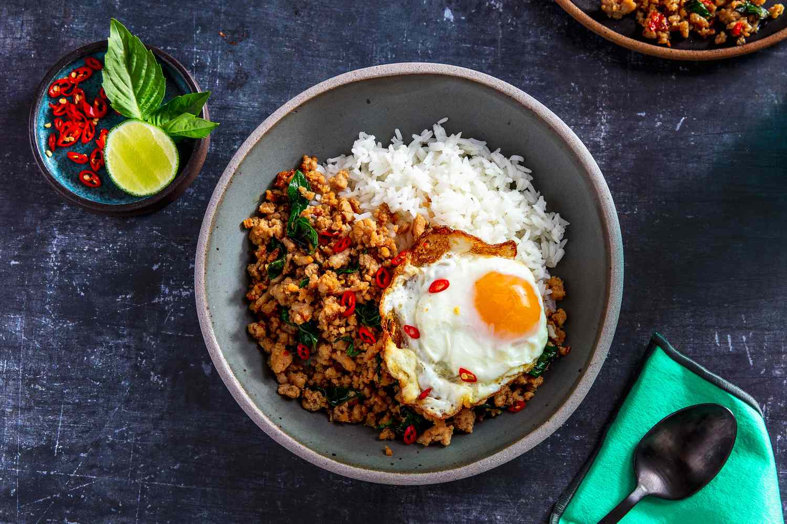

PadKraPow

This pad kra pao (pork & holy basil-stir-fry) features a key ingredient: holy basil! With jasmine rice, it's perfection. And it only takes minutes to make.
Ingredients
- Vegetable oil
- Shallots
- Garlic cloves
- Chilies
- Ground pork or beef
- Sugar
- Fish sauce
- Soy sauce
- Oyster sauce
Steps
- In a wok over medium high heat, add the oil, shallots and garlic, and fry for 3 minutes.
Add the chilies and cook for another minute. Crank up the heat to high, and add the
ground pork, breaking it up into small bits and allowing it to crisp up.
- Add the sugar, fish sauce, soy sauce, dark soy sauce, and oyster sauce.
Stir-fry for another minute and deglaze the pan with the broth or water.
Because your pan is over high heat, the liquid should cook off very quickly.
Add the basil, and stir-fry until wilted. Serve over rice.
Serve this Pork Pad Kra Pao(Holy Basil Stir-fry) over rice! I think we could have named
this Pork & Holy Basil Stir-fry a 10 minute Pork Pad Kra Pao stir fry because it was that quick
and easy!